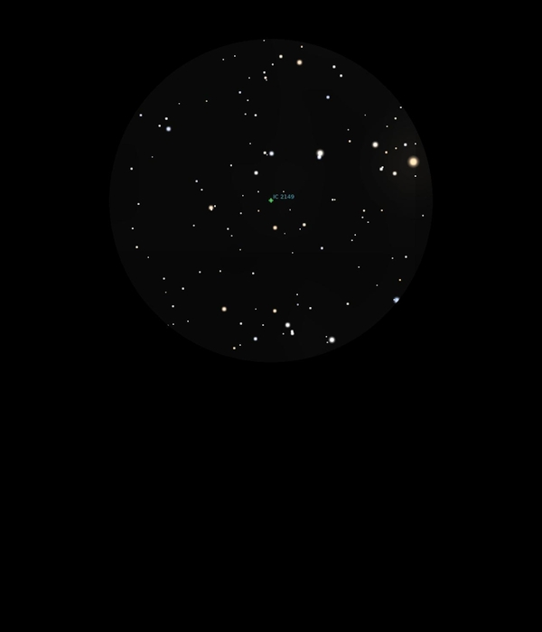

IC 2149
Planetary Nebula in Auriga
Mag 10.6
04/12/16
Very faint Planetary Nebula but easy to locate the FOV it sits
in
However, there are two stars of similar magnitudes close to it
although I think I am looking at the right thing!, just a tiny
out of focus dot